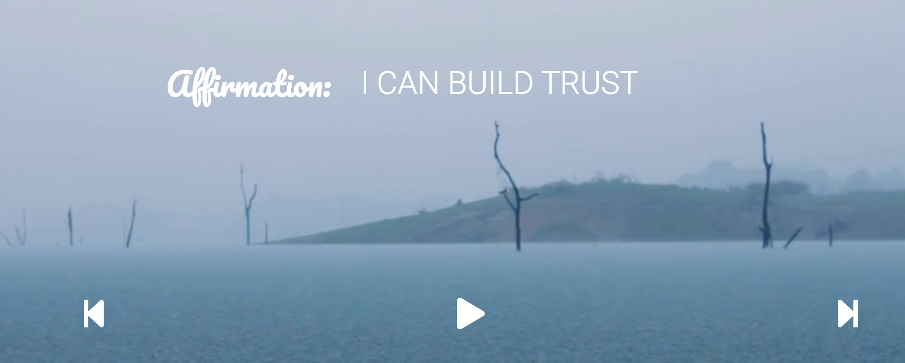
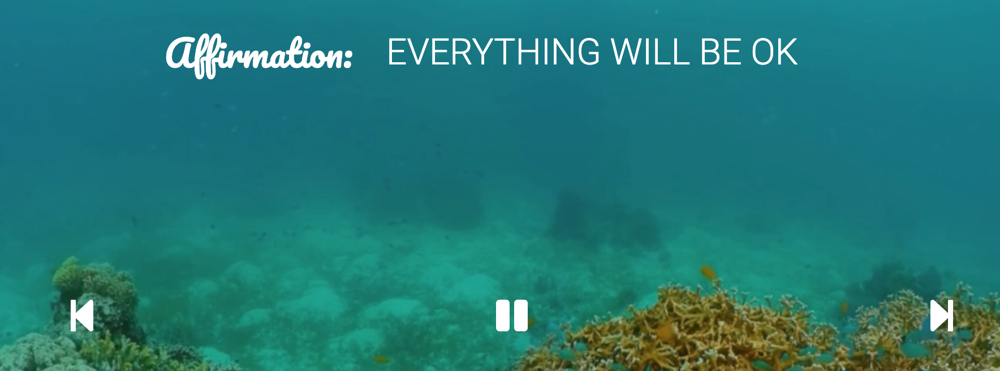

This is a family friendly meditation/affirmation site designed for both adults and children. It is a space to come to when you need to take some time out of your day to re-center and re-focus yourself.
In those moments when you or your children are feeling off balance and off kilter with life. Taking two minutes out of the day can really make a difference.
First Step:
Choose your meditation space and affirmation by pressing the previous or next buttons on the media player.


Next Step:
Set your timer, press the play button and relax...
This is best experienced with headphones on but please don't let it stop you from meditating whenever you need to. It's not a requirement. There's also a mute button if you would rather not have the sound on.
***feel free to share with friends and family using the share button on right side of screen.***